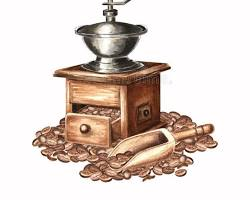

Nuestra Historia
De un Sueño Familiar a la Primera Taza
Todo empezó entre el aroma a café recién molido y las charlas de sobremesa en la cocina de casa. Somos Juan y Rodrigo, dos hermanos apasionados por el buen café y la cocina casera, que siempre compartimos el mismo sueño: crear un espacio donde la gente no solo viniera a tomar algo, sino a sentirse como en casa.
